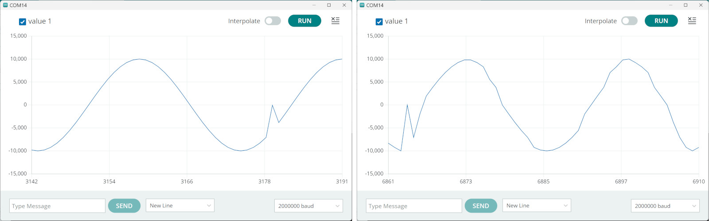

การอ่านข้อมูลเสียงจากโมดูลเซนเซอร์ INMP441 ด้วย ESP32#
▷ INMP441 Omnidirectional MEMS Microphone Sensor#
INMP441 เป็นโมดูลเซนเซอร์ชนิดดิจิทัลของบริษัท Invensense สำหรับการใช้งานไมโครโฟนเสียงแบบดิจิทัลที่มีคุณภาพสูง ใช้พลังงานต่ำและมีราคาไม่แพง จัดอยู่ในประเภทที่เรียกว่า MEMS (Micro-Electro-Mechanical Systems) โดยมีเอาต์พุตแบบ I2S (Inter-IC Sound)
รูป: โมดูล INMP441 ที่ได้นำมาใช้งาน และองค์ประกอบภายในชิป INMP441
จากรูปจะเห็นได้ว่า ตัวอุปกรณ์เซนเซอร์ INMP441 มีขนาดเล็ก มีรูเล็ก ๆ เปิดไว้รับเสียง (Sound Hole) ดังนั้นในการนำมาใช้งานจึงใช้โมดูลประเภท Breakout สามารถบัดกรีขาได้ง่าย และใช้งานได้กับเบรดบอร์ดได้สะดวก INMP441 รับเสียงหรือตอบสนองต่อความถี่ได้ดี (Frequency Response) ในช่วง 60Hz - 15kHz
ภายในชิป INMP441 ประกอบด้วยเซ็นเซอร์ MEMS ซึ่งแปลงพลังงานจากเสียงให้เป็นพลังงานไฟฟ้า วงจรปรับสัญญาณแอนะล็อก (Signal Conditioning) ตัวแปลงสัญญาณอนาล็อกเป็นดิจิทัล (Sigma-Delta ADC) ตัวกรองสัญญาณเพื่อจำกัดความถี่ (Anti-aliasing Filters) และอินเทอร์เฟซ I2S แบบ 24 บิต ข้อมูลเอาต์พุตมีขนาด 24 บิต (เป็นแบบ 2's complement) ดังนั้นค่าสูงสุดที่เป็นบวก (ค่าสเกลดิจิทัลเต็มสเกล) คือ
dBFS (Decibels Full Scale) เป็นหน่วยที่ใช้วัดระดับสัญญาณเสียงในระบบดิจิทัล เปรียบเทียบกับ "ค่าสูงสุด" ที่ระบบสามารถแสดงได้
- ค่า 0 dBFS หมายถึงระดับเสียงที่ "ดังสุด" ที่ระบบสามารถบันทึกหรือส่งออกได้โดยไม่เกิดการเพี้ยน หรือที่เรียกว่า "คลิป" (Clipping)
- ค่าที่เป็นลบ หมายถึงสัญญาณที่เบากว่าระดับสูงสุด
ความไวของไมโครโฟน (Sensitivity) เป็นตัวระบุว่า ไมโครโฟนสามารถ "จับเสียง" ได้ดีแค่ไหนเมื่อใช้กับเสียงทดสอบ สำหรับ INMP441 ความไวอยู่ที่ระดับ -26 dBFS เมื่อใช้กับเสียงทดสอบความถี่ 1 kHz และมีเสียงดังที่ระดับ 94 dB SPL (Sound Pressure Level) ซึ่งเสียงระดับดังพอ ๆ กับเครื่องดูดฝุ่นขณะทำงาน เมื่อได้รับเสียงอินพุตดังกล่าว ไมโครโฟนจะให้ค่าเอาต์พุตที่มีค่าแอมพลิจูดสูงสุด (Peak Amplitude) เท่ากับ ซึ่งคำนวณได้จาก
โมดูล INMP441 มีขาดังนี้:
VDD: แรงดันไฟเลี้ยงในช่วง 1.62V - 3.63V โดยทั่วไปก็ใช้ +3.3V (ใช้กระแสไฟฟ้าสูงสุดไม่เกิน 2.5mA)SCK(Serial Clock): สัญญาณนาฬิกาสำหรับอินเทอร์เฟซ I2S (ความถี่สูงสุดไม่เกิน 3.2MHz)SD(Serial Data): เอาต์พุตข้อมูลเสียงแบบดิจิทัลWS(Word Select): สัญญาณเลือกคำข้อมูลสำหรับ I2SL/R(Left/Right): เลือกช่องเสียงซ้ายหรือขวา ('0' = Left channel, '1' = Right channel)CHIPEN(Chip Enable): ขาควบคุมการทำงาน ('0' = disabled / power-down, '1' = enabled)GND: กราวด์ของระบบ
รูป: ตัวอย่างการต่อใช้งานโมดูล INMP441 จำนวน 2 ตัวพร้อมกัน สำหรับเสียงแบบ Stereo โมดูลด้านซ้ายสำหรับช่องสัญญาณ Left Channel (L/R = 0) และโมดูลด้านขวาสำหรับช่องสัญญาณ Right Channel (L/R = 1) ตามลำดับ
รูป: ลำดับการส่งบิตข้อมูลตามจังหวะของสัญญาณ SCK โดยแบ่งเป็น 3 กรณี ตามรูปแบบการใช้งาน คือ Stereo และ Mono Left-Channel หรือ Mono Right-Channel
จากรูปสัญญาณจะเห็นได้ว่า หนึ่งคาบของสัญญาณ WS (Word Select) จะมีจำนวนไซเคิลของ SCK เท่ากับ 64 แบ่งเป็นช่วงของข้อมูลสำหรับช่องสัญญาณซ้าย 32 (เมื่อสัญญาณ WS='0') และตามด้วยช่องสัญญาณขวา 32 ครั้ง (เมื่อสัญญาณ WS='1')
โมดูล INMP441 ให้เอาต์พุตแบบ Mono โดยจะต้องเลือกว่า จะใช้สำหรับช่องซ้ายหรือขวา แต่ถ้าต้องการให้เป็น Stereo จะต้องใช้โมดูล 2 ตัว ทำงานคู่กัน
▷ การเขียนโค้ดด้วย Arduino#
ถัดไปเป็นตัวอย่างการเขียนโค้ดด้วย Arduino โดยใช้ Arduino-ESP32 Core (ทดลองใช้กับเวอร์ชัน 3.2.0) และได้นำมาทดสอบกับบอร์ดไมโครคอนโทรลเลอร์ ESP32 และ ESP32-S3
- WeMos Lolin32 Lite Board: ESP-WROOM-32 module (4MB Flash) and CP2104 USB-to-Serial chip
- YD-ESP32-S3 N16R8 Board: ESP32-S3-WROOM-1 module (16MB Flash / 8MB PSRAM, Octal-SPI), CH343P USB-to-Serial chip
ชิป ESP32 / ESP32/S3 ทำงานแบบ Dual-Core (240MHz CPU clock)
และมีวงจร I2S Peripheral อยู่ภายใน จำนวน 2 ชุด (I2S_NUM_0
และ I2S_NUM_1) ให้เลือกใช้งานได้ และเลือกขา GPIO ได้อิสระ จำนวน 3 ขา
สำหรับขาสัญญาณ SCK, WS และ SD (เป็นสัญญาณเอาต์พุตจาก ESP32 ไปยัง INMP441)
และการใช้งานวงจร I2S ก็มีไลบรารี ESP_I2S ให้ใช้งานได้สะดวก
การใช้ขา GPIO สำหรับเชื่อมต่อกับ INMP441 ได้ตั้งค่าการใช้งานดังนี้
- YD-ESP32-S3 N16R8:
#define I2S_WS (GPIO_NUM_40)#define I2S_SD (GPIO_NUM_41)#define I2S_SCK (GPIO_NUM_42)
- WeMos Lolin32 Lite:
#define I2S_WS (GPIO_NUM_15)#define I2S_SD (GPIO_NUM_13)#define I2S_SCK (GPIO_NUM_2)
การทำงานของโค้ดตัวอย่างมีดังนี้
- มี 2 กรณี คือ การใช้งานโมดูล INMP441 ที่ต่อวงจรใช้งานจริง หรือ ยังไม่ใช้โมดูลเซนเซอร์ และลองใช้ข้อมูลรูปคลื่นสัญญาณไซน์ในการทดสอบ
- ในกรณีที่ใช้โมดูล INMP441 (ใช้ช่องสัญญาณด้านซ้าย L/R=
0) ก็ต้องมีการตั้งค่าใช้งานก่อน- เลือกใช้ขาสัญญาณ
I2S_WS,I2S_SD,I2S_SCKตามที่กำหนดไว้ - ตั้งค่าอัตราการชักตัวอย่าง (Sample Rate):
SAMPLE_FREQเช่น16000(16kHz) - กำหนดจำนวนข้อมูลในการอ่านจากโมดูลเสียงเพื่อนำมาเก็บในบัฟเฟอร์:
BUF_LENเช่น512โดยข้อมูลแต่ละตัวมีขนาด 16 บิต (16-bit Integer) - ถ้าต้องการข้อมูลครั้งละ 512 ตัวอย่าง และอัตราการชักตัวอย่าง 16kHz จะมีช่วงระยะเวลาเท่ากับ 32 msec () ในการบันทึกเสียง
- เลือกใช้ขาสัญญาณ
- ใช้การทำงานแบบ "มัลติทาสก์" (Multi-tasking) ด้วย FreeRTOS เพื่อแยกภารกิจ 2 ส่วนออกจากกัน ได้แก่:
- I2S Task: ทำงานโดยใช้ CPU Core 0 และอ่านข้อมูลเสียงจากโมดูลเซนเซอร์โดยใช้วงจร I2S เมื่อได้ข้อมูลในบัฟเฟอร์แล้ว จึงนำไปใส่ลงใน FreeRTOS Queue
- Serial Task: ทำงานโดยใช้ CPU Core 1 และอ่านข้อมูลเสียงจาก FreeRTOS Queue แล้วส่งออกทาง Serial เพื่อส่งต่อไปยัง Arduino Serial Plotter และดูค่าตัวอย่างเสียงหรือคลื่นสัญญาณเสียงที่ได้แบบเรียลไทม์
- มีการส่งข้อมูลออกไปยังคอมพิวเตอร์ โดยใช้ USB-to-Serial
- ส่งออกทาง Serial ที่เชื่อมต่อกับชิป USB-to-Serial (เช่น CH343P หรือ CP2104)
- ส่งออกทาง USB-CDC (เฉพาะกรณีที่ใช้ชิป ESP32-S3)
คำสั่งที่สำคัญและเกี่ยวข้องกับการใช้งาน I2S ของ ESP32
I2SClass i2s: สร้างออบเจกต์i2sจากคลาส I2SClass ซึ่งเป็นคลาสที่จัดการอินเทอร์เฟซ I2S ของ ESP32i2s.setPins(...): ใช้สำหรับกำหนดพินที่ใช้ในอินเทอร์เฟซ I2Si2s.begin(...): เริ่มต้นใช้งาน I2S Peripherali2s.configureRX(...): ใช้กำหนดการทำงานของช่องรับ (RX) การใช้หน่วยความจำสำหรับ DMA มีการรับเฟรมข้อมูลขนาด 32 บิต แล้วแปลงให้เป็นข้อมูล 16 บิต โดยอัตโนมัติi2s.readBytes(...): อ่านข้อมูลจาก I2S Peripheral ที่กำลังรับข้อมูลอยู่ ตามจำนวนที่ต้องการ
File: esp32_inmp441_serial.ino
/////////////////////////////////////////////////////////////////////////////
// Arduino ESP32 Core : v3.2.0
// Espressif ESP-IDF : v5.4-690-gd4aa25a38e-dirty
/////////////////////////////////////////////////////////////////////////////
#include <Arduino.h>
#include <ESP_I2S.h> // Use the ESP_I2S library
#if ESP_ARDUINO_VERSION < ESP_ARDUINO_VERSION_VAL(3, 0, 0)
#error "Please use Arduino ESP32 Core v3.0.0 or higher..."
#endif
// Uncomment the following line to use the INMP441 I2S Microphone
#define USE_I2S_MEMS_MIC
// Three GPIO pins are required for the I/O signals (WS, SD, SCK)
// of the I2S MEMS Microphone (Mono).
#if defined(CONFIG_IDF_TARGET_ESP32S3)
// YD-ESP32-S3 N16R8 Board
#define BAUDRATE (2000000)
#define LED_ON (1)
#define LED_PIN (GPIO_NUM_48 + SOC_GPIO_PIN_COUNT) // Onboard RGB LED
#define I2S_WS (GPIO_NUM_40) // Word Select (WS)
#define I2S_SD (GPIO_NUM_41) // Serial Data (SD)
#define I2S_SCK (GPIO_NUM_42) // Serial Clock (SCLK)
#elif defined(CONFIG_IDF_TARGET_ESP32)
// WeMos Lolin32 Lite Board
#define BAUDRATE (921600)
#define LED_ON (0)
#define LED_PIN (GPIO_NUM_22) // Onboard LED
#define I2S_WS (GPIO_NUM_15) // Word Select (WS)
#define I2S_SD (GPIO_NUM_13) // Serial Data (SD)
#define I2S_SCK (GPIO_NUM_2) // Serial Clock (SCLK)
#else
#error "Not supported!!!"
#endif
#define LED_OFF (!LED_ON)
#define SAMPLE_FREQ (16000) // Sampling rate
#define BUF_LEN (512) // Buffer length
I2SClass i2s_in; // Instance of the I2S class
int16_t buf[BUF_LEN]; // Buffer to store samples
QueueHandle_t sampleQueue = NULL; // FreeRTOS queue
// Two FreeRTOS tasks
void i2sTask(void *param);
void serialTask(void *param);
void i2sInit() {
int success;
// Set up the pins used for audio input
i2s_in.setPins( I2S_SCK, I2S_WS, -1, I2S_SD );
// Start the operation of the I2S peripheral, using I2S standard mode
success = i2s_in.begin( I2S_MODE_STD, SAMPLE_FREQ, I2S_DATA_BIT_WIDTH_32BIT,
I2S_SLOT_MODE_MONO, I2S_STD_SLOT_LEFT );
if (!success) {
Serial.println("Failed to initialize I2S bus!");
}
success = i2s_in.configureRX( SAMPLE_FREQ, I2S_DATA_BIT_WIDTH_32BIT,
I2S_SLOT_MODE_MONO, I2S_RX_TRANSFORM_32_TO_16 );
if (!success) {
Serial.println("Failed to configure I2S RX transformation!");
}
}
void setup() {
Serial.begin(BAUDRATE);
pinMode(LED_PIN, OUTPUT);
digitalWrite(LED_PIN, LED_ON);
delay(2000);
while(!Serial) { delay(1); }
Serial.println("\n\n\n");
Serial.flush();
Serial.println("ESP32 + I2S MEMS Microphone Demo...");
digitalWrite(LED_PIN, LED_OFF);
show_esp32_info();
Serial.println("Wait for any character from Serial before proceeding..");
Serial.flush();
while (!Serial.available()) {
delay(1);
}
#ifdef USE_I2S_MEMS_MIC
i2sInit(); // Initialize the I2S peripheral
#endif
// Create a FreeRTOS queue
sampleQueue = xQueueCreate(2 * BUF_LEN, sizeof(int16_t));
if (!sampleQueue) {
Serial.println("Failed to create a FreeRTOS queue!");
}
// Create two FreeRTOS tasks
xTaskCreatePinnedToCore(i2sTask, "I2S Task", 8192 /*stack size*/,
NULL, 2 /*task priority*/, NULL, 1 /*CPU core*/);
xTaskCreatePinnedToCore(serialTask, "Serial Task", 4096 /*stack size*/,
NULL, 1 /*task priority*/, NULL, 0 /*CPU core*/);
}
void loop() {
// empty
}
void i2sTask(void *param) {
uint32_t num_samples;
while (true) {
digitalWrite(LED_PIN, LED_ON); // Turn on the LED
#ifdef USE_I2S_MEMS_MIC // Use the I2S MEMS microphone device
num_samples = i2s_in.readBytes((char *)buf, sizeof(buf)) / 2;
#else // Use sinewave data
num_samples = BUF_LEN;
for ( int i=0; i < BUF_LEN; i++) {
buf[i] = 10000*sin(2*PI*i/32);
}
delay(40);
#endif
if (sampleQueue != NULL && num_samples > 0) {
for (uint32_t i = 0; i < num_samples; i++) {
xQueueSend(sampleQueue, &buf[i], portMAX_DELAY);
}
}
digitalWrite(LED_PIN, LED_OFF); // Turn off the LED
taskYIELD();
}
}
void serialTask(void *param) {
int16_t sample;
uint32_t count = 0;
while (true) {
xQueueReceive( sampleQueue, &sample, portMAX_DELAY );
Serial.println( sample );
Serial.flush();
count = (count+1) % 64;
if (count == 0) {
delay(1);
}
}
}
void show_esp32_info() {
Serial.println("=========================================");
Serial.printf("Arduino ESP32 Core v%u.%u.%u\n",
ESP_ARDUINO_VERSION_MAJOR,
ESP_ARDUINO_VERSION_MINOR,
ESP_ARDUINO_VERSION_PATCH );
Serial.printf("Espressif IDF: %s\n", ESP.getSdkVersion() );
Serial.printf("Chip Revision %d\n", ESP.getChipRevision() );
Serial.printf("Cpu Freq. %lu MHz\n", ESP.getCpuFreqMHz() );
Serial.printf("Heap (total/free): %lu / %lu bytes\n",
ESP.getHeapSize(), ESP.getFreeHeap());
Serial.printf("PSRAM (toal/free): %lu / %lu bytes\n",
ESP.getPsramSize(), ESP.getFreePsram());
Serial.printf("Flash Size: %lu MB, Flash Speed: %lu MHz\n",
ESP.getFlashChipSize()/(1024*1024UL),
ESP.getFlashChipSpeed()/(uint32_t) 1e6 );
// more info...
Serial.printf("Espressif chip model: %s\n",
ESP.getChipModel() );
Serial.printf("Number of CPU Cores: %d\n",
ESP.getChipCores() );
String str;
switch(ESP.getFlashChipMode()) {
case FM_QIO: str = "QIO"; break;
case FM_QOUT: str = "QOUT"; break;
case FM_DIO: str = "DIO"; break;
case FM_DOUT: str = "DOUT"; break;
default: str = "Unknown"; break;
}
Serial.printf("Flash model: %s\n", str.c_str() );
Serial.println("=========================================\n");
Serial.flush();
}
รูป: การเชื่อมต่อพอร์ต USB Type-C โดยผ่านทางชิป USB-to-Serial CH343P ไปยัง ESP32-S3 (Hardware Serial)
รูป: การเชื่อมต่อพอร์ต USB Type-C โดยผ่านทางขา D+/D- ของ ESP32-S3 (USB CDC)
รูป: การทดสอบโดยใช้ ESP32-S3 ส่งข้อมูลรูปคลื่นไซน์ ส่งออกทาง Hardware Serial ตั้งค่า Baud=2000000
รูป: แสดงข้อมูลที่ได้รับจาก ESP32-S3 (CH343P) โดยใช้ Arduino Serial Plotter ซึ่งจะได้รูปคลื่นไซน์ และมีแอมพลิจูด อยู่ในช่วง +/-10,000
รูป: ตัวอย่างคลื่นสัญญาณเสียงที่อ่านได้จากโมดูล INMP441 โดยใช้สัญญาณเสียงความถี่คงถี่ประมาณ 1kHz
หากลองเปลี่ยนไปใช้ USB-CDC แทนที่การส่งข้อมูลออกทาง USB-to-Serial Chip จะเห็นได้ว่า จากข้อมูลเสียงทดสอบรูปคลื่นไซน์ที่ได้รับ มีบางช่วงเวลาผิดเพี้ยนไปจากที่ควรจะเป็น
รูป: การทดลองส่งข้อมูลรูปคลื่นไซน์จาก ESP32-S3 โดยใช้ USB-CDC

รูป: แสดงข้อมูลที่ได้รับจาก ESP32-S3 (USB-CDC) โดยใช้ Arduino Serial Plotter ตั้งค่า Baud=2000000
ดังนั้นจึงสรุปว่า ควรส่งข้อมูลออกทาง USB-to-Serial Chip แทนที่จะใช้ช่องทาง USB-CDC ของ ESP32-S3
การส่งข้อมูลผ่าน USB-to-Serial ไปยังคอมพิวเตอร์ของผู้ใช้ และใช้ Arduino Serial Plotter รับค่าและแสดงรูปคลื่นสัญญาณ แต่ก็เป็นเครื่องมือที่ช่วยในการตรวจสอบการทำงานของระบบในเบื้องต้น เมื่อข้อมูลถูกส่งมายังคอมพิวเตอร์ของผู้ใช้ ก็มีแนวทางการพัฒาต่อไป เช่น การนำข้อมูลไปบันทึกลงไฟล์ .wav หรือแสดงรูปคลื่นสัญญาณก็ได้
การวัดสัญญาณของ I2S โดยใช้ออสซิลโลสโคป มีตัวอย่างรูปคลื่นสัญญาณดังนี้
รูป: การวัดสัญญาณช่อง CH1 และ CH2 (WS และ SD ตามลำดับ)
รูป: การวัดสัญญาณช่อง CH1 และ CH2 (SCK และ SD ตามลำดับ)
จากรูปคลื่นสัญญาณที่วัดได้ สัญญาณ WS มีความถี่เท่ากับ 16kHz หรือมีคาบเท่ากับ 62.5us และช่วงที่ WS=0
จะมีข้อมูลบิตสำหรับสัญญาณเสียงช่องซ้าย แต่ถ้า WS=1 ข้อมูลบิตจะเป็นศูนย์สำหรับสัญญาณเสียงช่องขวา
สัญญาณ SCK มีความถี่เท่ากับ 1.024MHz ()
และข้อมูลบิตจะเปลี่ยนลอจิกได้เมื่อเกิดขอบขาลงของสัญญาณ SCK
▷ การอ่านข้อมูลจาก INMP4411 และส่งข้อมูลผ่านเครือข่าย Wi-Fi#
บอร์ด ESP32 / ESP32-S3 สามารถเชื่อมต่อกับ Wi-Fi Access Point ได้ ดังนั้นถัดไปเป็นตัวอย่างการเขียนโค้ด Arduino Sketch เพื่ออ่านข้อมูลเสียงจาก INMP441 เมื่อมีการเชื่อมต่อจากเครื่องคอมพิวเตอร์ของผู้ใช้ ผ่านระบบ Wi-Fi
โค้ดตัวอย่างนี้ จะต้องมีไฟล์ secrets.h สำหรับตั้งค่าการเชื่อมต่อกับ Wi-Fi
#define WIFI_SSID "YOUR_WIFI_SSID"
#define WIFI_PASS "YOUR_WIFI_PASSWD"
บอร์ด ESP32 จะทำหน้าที่เป็น TCP Server และรอคอยการติดต่อเข้ามาจาก TCP Client
โดยได้เลือกใช้หมายเลขพอร์ต 9000 และเมื่อมี TCP Client เชื่อมต่อเข้ามา ESP32 จะส่งข้อความแรกเป็น
ready เพื่อส่งสัญญาณว่า พร้อมที่จะส่งข้อมูลเสียงกลับไป จากนั้นจึงจะเป็นชุดข้อมูลเสียง
ในโค้ดตัวอย่างนี้ การส่งข้อมูลเสียงผ่าน Socket Stream จะส่งครั้งละ 512 ข้อมูล ที่มีขนาด 16 บิต ดังนั้นจึงส่งข้อมูลคราวละ 1024 ไบต์ และจะส่งข้อมูลชุดถัดไป เรื่อย ๆ หาก Client ยังมีการเชื่อมต่ออยู่
File: esp32_inmp441_tcp_server.ino
/////////////////////////////////////////////////////////////////////////
// Arduino ESP32 Core v3.2.0
// Board: WeMos Lolin32 Lite or VCC GND Studio YD-ESP32-S3
// I2S MEMS Microphone: INMP441 (3.3V)
// L/R pin is connected to GND (use the left channel).
/////////////////////////////////////////////////////////////////////////
#include <Arduino.h>
#include <ESP_I2S.h> // Use the ESP_I2S library
#include <WiFi.h>
#include "secrets.h" // Define WIFI_SSID and WIFI_PASS
// Three GPIO pins are required for the I/O signals (WS, SD, SCK)
// of the I2S MEMS Microphone (Mono).
#if defined(CONFIG_IDF_TARGET_ESP32S3)
// YD-ESP32-S3 N16R8 Board
#define LED_ON (1)
#define LED_PIN (GPIO_NUM_48 + SOC_GPIO_PIN_COUNT) // Onboard RGB LED
#define I2S_WS (GPIO_NUM_40) // Word Select (WS)
#define I2S_SD (GPIO_NUM_41) // Serial Data (SD)
#define I2S_SCK (GPIO_NUM_42) // Serial Clock (SCLK)
#elif defined(CONFIG_IDF_TARGET_ESP32)
// WeMos Lolin32 Lite Board
#define LED_ON (0)
#define LED_PIN (GPIO_NUM_22) // Onboard LED
#define I2S_WS (GPIO_NUM_15) // Word Select (WS)
#define I2S_SD (GPIO_NUM_13) // Serial Data (SD)
#define I2S_SCK (GPIO_NUM_2) // Serial Clock (SCLK)
#else
#error "Not supported!!!"
#endif
#define LED_OFF (!LED_ON)
#define SAMPLE_RATE (16000)
#define BUF_LEN (512)
#define SERVER_PORT (9000)
I2SClass i2s_in;
int16_t i2s_buf[ BUF_LEN ];
WiFiServer server( SERVER_PORT );
void initWiFi() {
Serial.println("\nConnecting WiFi...\n");
WiFi.begin(WIFI_SSID, WIFI_PASS);
while (WiFi.status() != WL_CONNECTED) {
digitalWrite( LED_PIN, !digitalRead( LED_PIN) );
delay(200);
Serial.println(".");
}
digitalWrite( LED_PIN, LED_OFF );
Serial.println("\nConnected to WiFi");
Serial.print("IP Address: ");
Serial.println(WiFi.localIP()); // Show the IP address
Serial.printf("Starting a TCP server on port %d\n", SERVER_PORT );
server.begin();
}
void initI2S() {
i2s_data_bit_width_t i2s_bitwidth = I2S_DATA_BIT_WIDTH_32BIT;
i2s_mode_t i2s_mode = I2S_MODE_STD;
i2s_slot_mode_t i2s_slot = I2S_SLOT_MODE_MONO;
int8_t i2s_slot_mask = I2S_STD_SLOT_LEFT;
i2s_rx_transform_t i2s_rx_transform = I2S_RX_TRANSFORM_32_TO_16;
// Set up the pins used for audio input
i2s_in.setPins(I2S_SCK, I2S_WS, -1, I2S_SD);
// Initialize the I2S bus in standard mode with transformation to 16-bit
if (!i2s_in.begin(i2s_mode, SAMPLE_RATE, i2s_bitwidth,
i2s_slot, i2s_slot_mask))
{
Serial.println("Failed to initialize I2S bus!");
return;
}
// Configure the I2S receiver to transform 32-bit data to 16-bit data
if (!i2s_in.configureRX(SAMPLE_RATE, i2s_bitwidth,
i2s_slot, i2s_rx_transform))
{
Serial.println("Failed to configure I2S RX transformation!");
return;
}
Serial.println("I2S bus initialized and configured.");
}
void setup() {
pinMode( LED_PIN, OUTPUT );
digitalWrite( LED_PIN, LED_OFF );
Serial.begin(115200);
delay(1000);
while (!Serial) { delay(1); }
Serial.println("ESP32 + INMP441 I2S MEMS Mic + UDP Server\n");
Serial.flush();
initWiFi(); // Initialize WiFi
initI2S(); // Initialize I2S Peripheral
}
void loop() {
WiFiClient client = server.available();
if (client) { // There is a UDP client.
client.println("ready"); // Send "ready" message to the TCP client
digitalWrite( LED_PIN, LED_ON );
while (client.connected()) {
// Blocking call: read audio samples into the bufffer
size_t bytes_read = i2s_in.readBytes((char*)i2s_buf, sizeof(i2s_buf));
if (bytes_read > 0) { // Send the 16-bit data over WiFi
client.write((const char *)i2s_buf, bytes_read);
} else {
yield();
}
}
digitalWrite( LED_PIN, LED_OFF );
}
}
หากต้องการจะทดลองเลือกใช้รูปแบบการสื่อสารด้วยวิธี TCP หรือ UDP ก็มีแนวทางการแก้ไขโค้ดใหม่ดังนี้
หากมีการประกาศ #define USE_UDP ก็จะเลือกใช้วิธี UDP แต่ถ้าไม่ใช่ ก็ให้ใช้วิธี TCP
File: esp32_inmp441_tcp_udp_server.ino
/////////////////////////////////////////////////////////////////////////
// Arduino ESP32 Core v3.2.0
// Board: WeMos Lolin32 Lite or VCC GND Studio YD-ESP32-S3
// I2S MEMS Microphone: INMP441 (3.3V)
// L/R pin is connected to GND (use the left channel).
/////////////////////////////////////////////////////////////////////////
#include <Arduino.h>
#include <ESP_I2S.h> // Use the ESP_I2S library
#include <WiFi.h>
#include "secrets.h" // Define WIFI_SSID and WIFI_PASS
#define I2S_PORT (I2S_NUM_0) // The I2S peripheral to use
#define SAMPLE_RATE (16000)
#define BUF_LEN (512)
#define SERVER_PORT (9000)
// Uncomment the line below to use UDP instead of TCP
#define USE_UDP
#ifdef USE_UDP
#include <WiFiUdp.h>
WiFiUDP udp;
#else
WiFiServer server(SERVER_PORT);
#endif
// Three GPIO pins are required for the I/O signals (WS, SD, SCK)
// of the I2S MEMS Microphone (Mono).
#if defined(CONFIG_IDF_TARGET_ESP32S3)
// YD-ESP32-S3 N16R8 Board
#define LED_ON (1)
#define LED_PIN (GPIO_NUM_48 + SOC_GPIO_PIN_COUNT) // Onboard RGB LED
#define I2S_WS (GPIO_NUM_40)
#define I2S_SD (GPIO_NUM_41)
#define I2S_SCK (GPIO_NUM_42)
#elif defined(CONFIG_IDF_TARGET_ESP32)
// WeMos Lolin32 Lite Board
#define LED_ON (0)
#define LED_PIN (GPIO_NUM_22)
#define I2S_WS (GPIO_NUM_15)
#define I2S_SD (GPIO_NUM_13)
#define I2S_SCK (GPIO_NUM_2)
#else
#error "Not supported!!!"
#endif
#define LED_OFF (!LED_ON)
I2SClass i2s_in;
int16_t i2s_buf[BUF_LEN];
void initWiFi() {
Serial.println("\nConnecting WiFi...\n");
WiFi.begin(WIFI_SSID, WIFI_PASS);
while (WiFi.status() != WL_CONNECTED) {
digitalWrite(LED_PIN, !digitalRead(LED_PIN));
delay(200);
Serial.print(".");
}
digitalWrite(LED_PIN, LED_OFF);
Serial.println("\nConnected to WiFi");
Serial.print("IP Address: ");
Serial.println(WiFi.localIP());
#ifdef USE_UDP
Serial.printf("Starting a UDP server on port %d\n", SERVER_PORT);
udp.begin(SERVER_PORT);
#else
Serial.printf("Starting a TCP server on port %d\n", SERVER_PORT);
server.begin();
#endif
}
void initI2S() {
i2s_data_bit_width_t i2s_bitwidth = I2S_DATA_BIT_WIDTH_32BIT;
i2s_mode_t i2s_mode = I2S_MODE_STD;
i2s_slot_mode_t i2s_slot = I2S_SLOT_MODE_MONO;
int8_t i2s_slot_mask = I2S_STD_SLOT_LEFT;
i2s_rx_transform_t i2s_rx_transform = I2S_RX_TRANSFORM_32_TO_16;
i2s_in.setPins(I2S_SCK, I2S_WS, -1, I2S_SD);
if (!i2s_in.begin(i2s_mode, SAMPLE_RATE, i2s_bitwidth, i2s_slot, i2s_slot_mask)) {
Serial.println("Failed to initialize I2S bus!");
return;
}
if (!i2s_in.configureRX(SAMPLE_RATE, i2s_bitwidth, i2s_slot, i2s_rx_transform)) {
Serial.println("Failed to configure I2S RX transformation!");
return;
}
Serial.println("I2S bus initialized and configured.");
}
void setup() {
pinMode(LED_PIN, OUTPUT);
digitalWrite(LED_PIN, LED_OFF);
Serial.begin(115200);
delay(1000);
Serial.println("ESP32 + INMP441 I2S MEMS Mic + WiFi Streaming\n");
initWiFi();
initI2S();
}
#ifdef USE_UDP
IPAddress remoteIP;
uint16_t remotePort;
#endif
void loop() {
#ifdef USE_UDP
static bool sampling = false;
int packetSize = udp.parsePacket();
if (packetSize) { // Check for incoming UDP packet
char sbuf[16] = {0};
udp.read(sbuf, sizeof(sbuf)); // Read the incoming data
remoteIP = udp.remoteIP();
remotePort = udp.remotePort();
Serial.printf("Received UDP packet '%s' from %s:%d\n",
sbuf, remoteIP.toString().c_str(), remotePort);
sampling = !sampling;
}
if (sampling) {
digitalWrite(LED_PIN, LED_ON);
size_t bytes_read = i2s_in.readBytes((char*)i2s_buf, sizeof(i2s_buf));
if (bytes_read > 0) {
udp.beginPacket(remoteIP, remotePort);
udp.write((uint8_t*)i2s_buf, bytes_read);
udp.endPacket();
}
digitalWrite(LED_PIN, LED_OFF);
}
#else
WiFiClient client = server.available();
if (client) {
client.println("ready");
digitalWrite(LED_PIN, LED_ON);
while (client.connected()) {
size_t bytes_read = i2s.readBytes((char*)i2s_buf, sizeof(i2s_buf));
if (bytes_read > 0) {
client.write((const char*)i2s_buf, bytes_read);
} else {
yield();
}
}
digitalWrite(LED_PIN, LED_OFF);
}
#endif
}
ในการรับข้อมูลเสียงจากบอร์ด ESP32 ก็ใช้วิธีเขียนโค้ดด้วยภาษา Python
เพื่อรับข้อมูลด้วยวิธี TCP หรือ UDP และนำข้อมูลที่ได้มาบันทึกลงไฟล์เสียง .wav
ตามความยาวเสียงที่ต้องการ เช่น 1 วินาที และการบันทึกเสียงจะเริ่มขึ้น โดยมีเงื่อนไขของทริกเกอร์ เช่น
เมื่อแอมพลิจูดของเสียง มีระดับสูงกว่าค่า TRIGGER_THRESHOLD ที่กำหนดไว้
การตั้งค่า Sample Rate ชนิดข้อมูล จำนวนข้อมูลที่ถูกส่งมาในแต่ละครั้ง และวิธีการรับส่งข้อมูลผ่านเครือข่าย จะต้องตรงกับที่ใช้สำหรับ ESP32 และจะต้องตั้งค่า IP Address ของ ESP32 ที่เชื่อมต่อเครือข่ายเดียวกันในระบบ Wi-Fi ให้ถูกต้องด้วย
ในการรันโค้ด Python ให้สร้าง Python Virtual Environment แล้วทำคำสั่งติดตั้งไลบรารีที่จำเป็นต้องใช้ ดังนี้
$ pip3 install matplotlib numpy scipy
File: audio_tcp_udp_client.py
import time
import socket
import numpy as np
import matplotlib.pyplot as plt
from scipy.signal import spectrogram
from scipy.io import wavfile
from collections import deque
USE_UDP = True # Select to use UDP or TCP
SERVER_IP = '192.168.100.73' # Replace with ESP32 IP
SERVER_PORT = 9000
SAMPLE_RATE = 16000
BUF_LEN = 512
DURATION = 1
TRIGGER_THRESHOLD = 500
PRE_TRIGGER_PERCENT = 25
def wait_for_ready_signal(sock):
print("Waiting for ready status from ESP32...")
while True:
data = sock.recv(1024).decode('utf-8')
if 'ready' in data:
print("ESP32 is ready.")
break
def rms(samples):
return np.sqrt(np.mean(samples.astype(np.float32)**2))
def listen_and_record(sock, fname="audio.wav",
threshold=TRIGGER_THRESHOLD,
duration=DURATION):
total_samples = int(SAMPLE_RATE * duration)
pre_trigger = int(total_samples * PRE_TRIGGER_PERCENT/100)
pre_buffer = deque(maxlen=pre_trigger)
audio_buffer = []
sample_idx = 0
triggered = False
print(f"Listening... (trigger threshold = {threshold},",
f"pre-roll = {pre_trigger} samples)")
while True:
try:
if USE_UDP:
data, _ = sock.recvfrom(BUF_LEN * 2)
else:
data = sock.recv(BUF_LEN * 2)
if not data:
continue
samples = np.frombuffer(data, dtype=np.int16)
if sample_idx == 0 and len(samples) >= 2:
samples = samples[2:]
level = rms(samples)
print(f"RMS level: {int(level)}", end='\r')
if not triggered:
pre_buffer.extend(samples)
if level > threshold:
print(f"\nLoud sound detected! Starting recording...")
triggered = True
audio_buffer = list(pre_buffer) + list(samples)
sample_idx = len(audio_buffer)
else:
audio_buffer.extend(samples)
sample_idx += len(samples)
if sample_idx >= total_samples:
break
except Exception as e:
print(f"\nError: {e}")
break
audio_array = np.array(audio_buffer[:total_samples], dtype=np.int16)
wavfile.write(fname, SAMPLE_RATE, audio_array)
print(f"\nSaved: {fname}")
return audio_array
def plot_audio_data(audio_data):
t_start, t_stop = 0, len(audio_data)/SAMPLE_RATE
time_axis = np.linspace(t_start, t_stop, num=len(audio_data))
plt.figure(figsize=(10, 8))
plt.subplot(2, 1, 1)
plt.plot(time_axis, audio_data)
plt.title('Time Series Data')
plt.xlabel('Time [s]')
plt.ylabel('Amplitude')
plt.subplot(2, 1, 2)
f, t, Sxx = spectrogram(audio_data, SAMPLE_RATE)
plt.pcolormesh(t, f, 10 * np.log10(Sxx), shading='gouraud')
plt.title('Spectrogram')
plt.ylabel('Frequency [Hz]')
plt.xlabel('Time [s]')
plt.colorbar(label='Intensity [dB]')
plt.tight_layout()
plt.show()
# ========== MAIN ==========
try:
if USE_UDP:
print("Using UDP mode...")
udp_sock = socket.socket(socket.AF_INET, socket.SOCK_DGRAM)
udp_sock.settimeout(5.0)
# Send start trigger
udp_sock.sendto(b'start', (SERVER_IP, SERVER_PORT))
audio_data = listen_and_record(udp_sock, fname="audio_udp.wav")
# Send stop trigger
udp_sock.sendto(b'stop', (SERVER_IP, SERVER_PORT))
udp_sock.close()
else:
print("Using TCP mode...")
tcp_sock = socket.socket(socket.AF_INET, socket.SOCK_STREAM)
tcp_sock.connect((SERVER_IP, SERVER_PORT))
wait_for_ready_signal(tcp_sock)
audio_data = listen_and_record(tcp_sock, fname="audio_tcp.wav")
tcp_sock.close()
plot_audio_data(audio_data)
except KeyboardInterrupt:
print('Terminated by user')
except Exception as ex:
print(f"Exception: {ex}")
รูป: ตัวอย่างการแสดงข้อมูลเสียงเป็นคลื่นสัญญาณที่มีความยาว 1 วินาที และ "สเปกโตรแกรม" (Spectrogram)
ซึ่งได้จากเสียงพูดคำว่า hello
▷ กล่าวสรุป#
บทความนี้ได้นำเสนอตัวอย่างการใช้งานโมดูลเซนเซอร์เสียง INMP441 ซึ่งนำมาใช้กับ ESP32 / ESP32-S3 เชื่อมต่อด้วยอินเทอร์เฟซ I2S ส่งข้อมูลไปยังคอมพิวเตอร์ผู้ใช้ผ่านทาง Serial แล้วนำมาแสดงรูปคลื่นสัญญาณ (Audio Waveform) หรือจะใช้วิธีเชื่อมต่อผ่าน Wi-Fi ด้วยวิธี TCP / UDP ก็ได้เช่นกัน โดยเขียนโค้ดภาษา Python เพื่อเชื่อมต่อกับบอร์ด ESP32
This work is licensed under a Creative Commons Attribution-ShareAlike 4.0 International License.
Created: 2025-04-25 | Last Updated: 2025-04-30